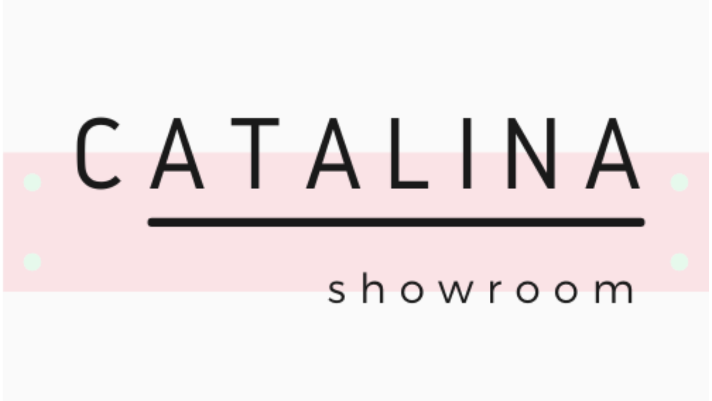

SOBRE MÍ
Soy Matías Delóngaro , me recibí de Relacionista Público y desde ese momento
comencé a indagar en el mundo del diseño web. Además, ayudo a emprendedores con herramientas importantes a desarrollar y potenciar sus proyectos para conseguir sus objetivos en el mercado digital. Me considero un autodidacta, la investigación y el continuo aprendizaje son mis ejes principales.
ALGUNOS DE MIS DISEÑOS

Manejo de redes
Realizo labores Estrategias de Marketing, creación de contenido y diseño en un emprendimiento de indumentaria femenina. Lo mismo hago para mi trabajo de Dj/Productor.